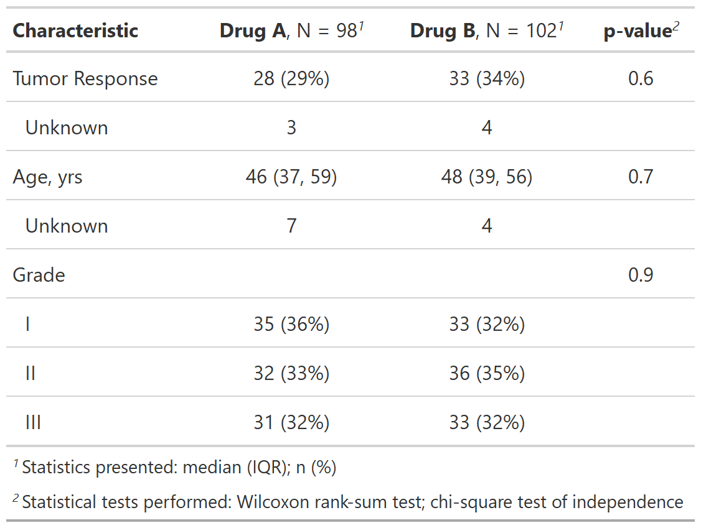
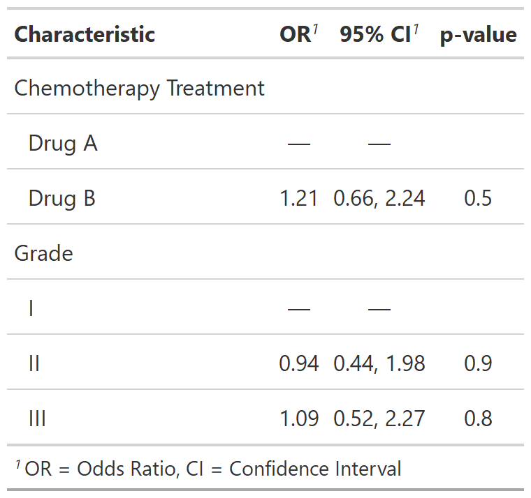

| sort_p {gtsummary} | R Documentation |
Sort tables created by gtsummary by p-values
sort_p(x, q = FALSE)
x |
An object created using gtsummary functions |
q |
Logical argument. When |
Example 1

Example 2

Karissa Whiting
# Example 1 ----------------------------------
sort_p_ex1 <-
trial[c("age", "grade", "response", "trt")] %>%
tbl_summary(by = trt) %>%
add_p() %>%
sort_p()
# Example 2 ----------------------------------
sort_p_ex2 <-
glm(response ~ trt + grade, trial, family = binomial(link = "logit")) %>%
tbl_regression(exponentiate = TRUE) %>%
sort_p()